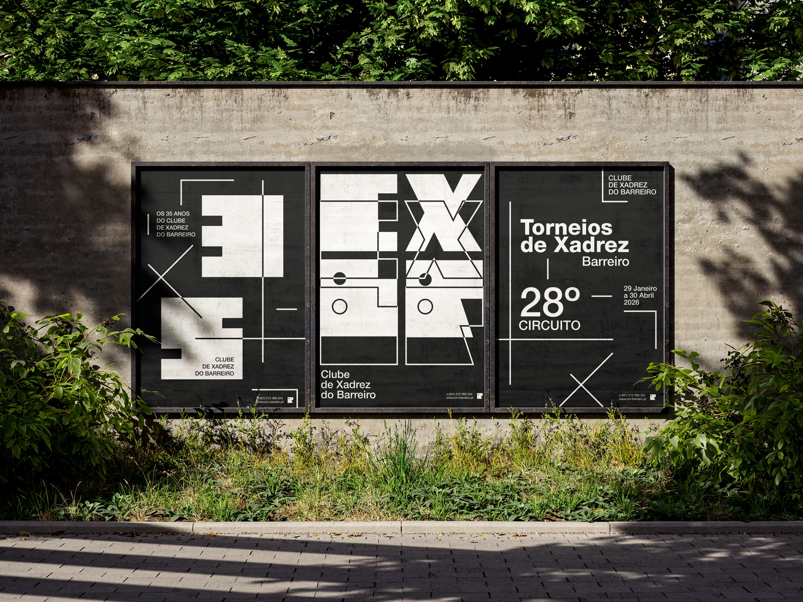
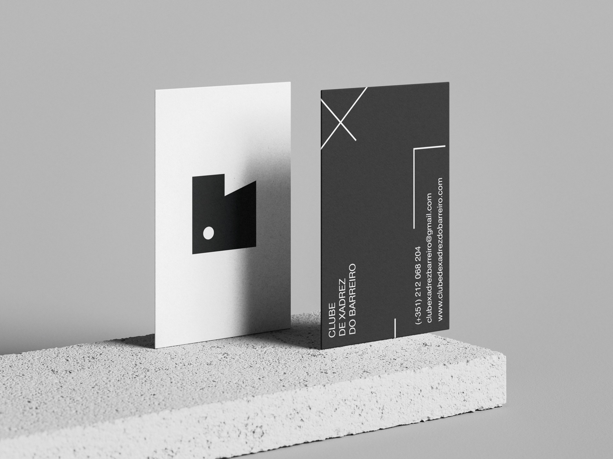
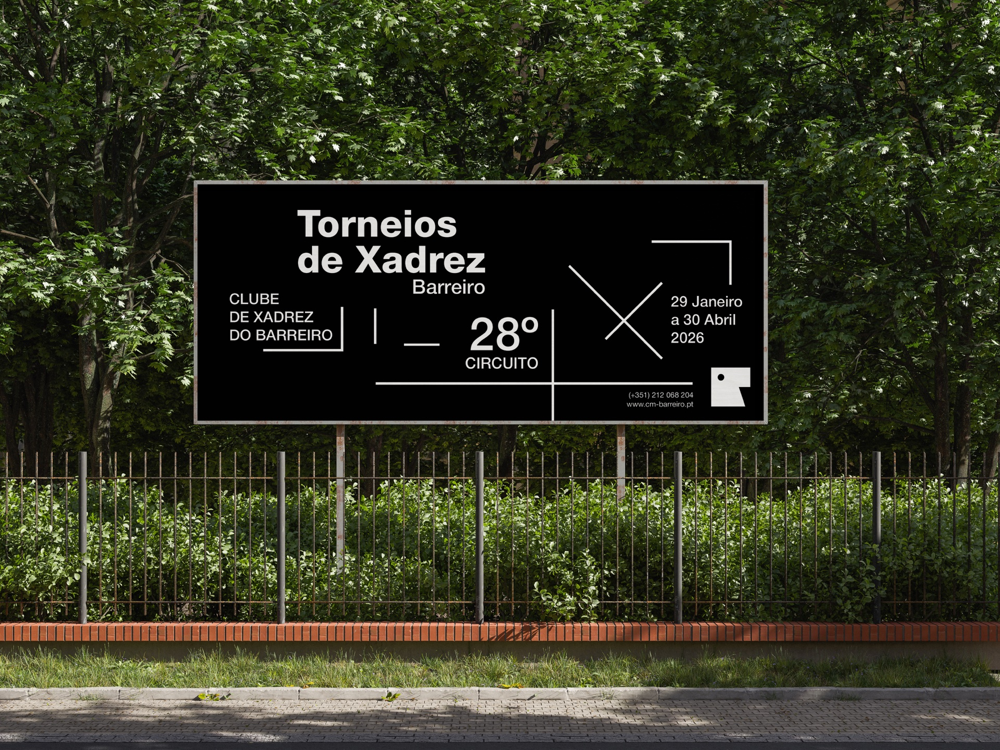
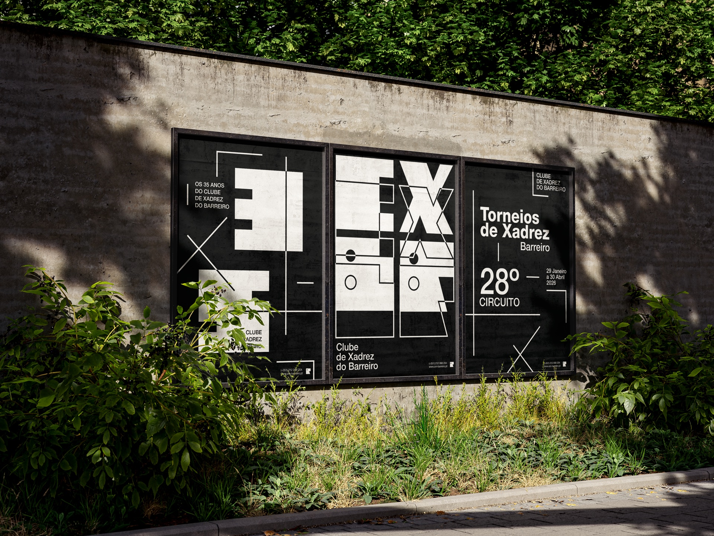

04
Clube de Xadrez do Barreiro
The largest chess association in Barreiro, with more than 25 years of history.
Context
A rebranding project developed for Clube de Xadrez do Barreiro, a non-profit association with more than 25 years of activity promoting chess and the local community.
Objective
To modernise the club's visual identity, making it more contemporary, recognisable and adaptable across different communication media, without losing the connection to the association's tradition.
Final Proposal
The final proposal presents a minimal, strategic visual identity built on simple shapes, typographic contrast and a clean graphic language — able to represent, at once, the logic, concentration and competitiveness associated with chess.




